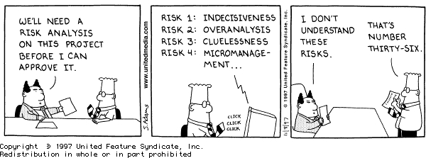

What I learned about risk management
1 Mastering Risk Management: working on a framework

Risk management is the cornerstone of sound decision-making in uncertain environments. By understanding the nuances of risk and uncertainty, businesses and individuals can prepare for challenges and seize opportunities. This guide is structured into four key sections, each building on the last to provide a comprehensive strategy for navigating the unpredictable: concepts, mindset to handle risks, strategies to handle risks, methods to act on risks.
2 Defining Risk and Uncertainty
Understanding the foundational difference between risk and uncertainty is the first step in managing them effectively. These concepts form the basis for strategic decision-making and influence how we approach the unknown.
2.1 Risk vs. Uncertainty
- Risk: Involves measurable probabilities of outcomes, such as rolling dice or forecasting based on historical data.
- Uncertainty: Represents scenarios where outcomes and probabilities are entirely unknown, like groundbreaking innovations or market disruptions.
2.2 Key Distinctions
- Predictability: Risk is predictable; uncertainty is not.
- Control: Risks can be managed; uncertainty cannot.
- Measurability: Risks are quantifiable; uncertainty resists precise measurement.
2.3 Why Both Matter
While risks allow for control and mitigation, real opportunities for profit and innovation arise in the face of uncertainty. Embracing uncertainty, rather than fearing it, is vital for achieving transformative outcomes.
In fact, this is what defines the full risk opportunity matrix. Do not always talk about the risks. Talk about the opportunities, too.
3 The Spectrum of Action: From Risk to Uncertainty
Once we understand the difference, the next challenge is deciding how to act. Businesses often face a spectrum where actions are either overly confident in quantifying risks or paralyzed by the fear of uncertainty.
There are two common issues: over-quantifiying risks and avoiding all risks,
Over-Quantifying Risk
- Assigning subjective probabilities to problems creates a false sense of objectivity.
- Tools like risk matrices may provide clarity but can oversimplify complex situations.
Avoiding All Risks
- Fear of uncertainty often leads to inaction.
- Balancing confidence and caution is crucial—neither overestimating predictability nor succumbing to indecision.
Recognizing the limits of predictability helps us avoid both extremes. The goal is to embrace uncertainty methodically while making informed decisions wherever risks are identifiable.
4 Practical Strategies for Navigating the Unknown
Armed with a balanced mindset, businesses can employ structured strategies to handle uncertainty and identify hidden risks.
4.1 Managing Uncertainty
- Aggregate Data: Use statistics and testing to transform some uncertainties into manageable risks.
- Seek Opportunity: Recognize that uncertainty often hides high-reward possibilities.
- Evaluate Retrospectively: Measure failures and waste as indicators of past uncertainty, improving future planning.
4.2 Uncovering Unknown Unknowns
When we talk about uncertainty and risks. a concept closely related are the known-unknowns and the unknown-unknwons.
Unknown unknowns often involve factors we don’t even consider. It is important to look at the right places to uncover these.
The following methods exists, to help us.
- Decompose Projects: Analyze subsystems and interrelations to expose complexity.
- Scenario Analysis: Develop multiple possible futures and examine their impacts.
- Use Long Interviews: Engage stakeholders deeply to surface latent risks.
- Spot Weak Signals: Look for subtle patterns or behaviors indicating hidden issues.

Culture does not only eat strategy for breakfast. An appropriate culture, which is adaptive can help in uncovering risks.
- Encourage open communication and allow bad news to surface.
- Incentivize risk discovery by rewarding transparency and a no-blame culture.
- Promote education about how unknowns emerge and why they matter.
Fostering transparency is a point where the triangle of trust can help, See my article on the triangle of trust..
5 Turning Knowledge into Action
Finally, effectively identifying, analyzing, and managing risks ensures that businesses and individuals can act confidently, even in uncertain environments.
5.1 Risk Identification
- Divergent Thinking: Use techniques like brainstorming, mind mapping, and the “Five Whys” to uncover potential risks, but see [[202501262201 Why the Fishbone Diagram Triumphs Over 5 Whys]].
- Convergent Thinking: Cluster risks into categories (e.g., technical, commercial, external, or management).
5.2 Risk Management
Once a risk is known the actual risk management becomes rather mechanical.
First, classify and quantify the Risk.
- Qualitative: Classify risks based on ownership, urgency, and dependencies.
- Quantitative: Assess impacts, costs, schedule shifts, and expected monetary values.
Then develop measures and classify the measures according to this methodology.
- For risks:
- Avoid: Eliminate exposure.
- Mitigate: Reduce likelihood or impact.
- Transfer: Shift responsibility.
- Accept: Prepare to manage the fallout.
- Escalate: Elevate critical risks to leadership.
- For opportunities:
- Exploit: Maximize benefits.
- Share: Collaborate for mutual gain.
- Enhance: Improve likelihood or impact.
6 Conclusion
By integrating these four elements—defining concepts, balancing action, strategizing, and executing plans—risk management becomes a cohesive framework. Embracing uncertainty alongside managing risk enables businesses to minimize threats, seize opportunities, and foster innovation in an ever-changing world.